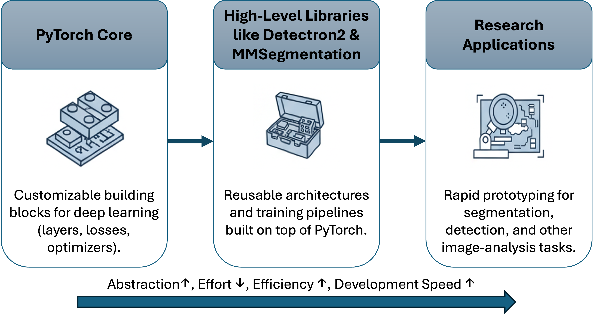
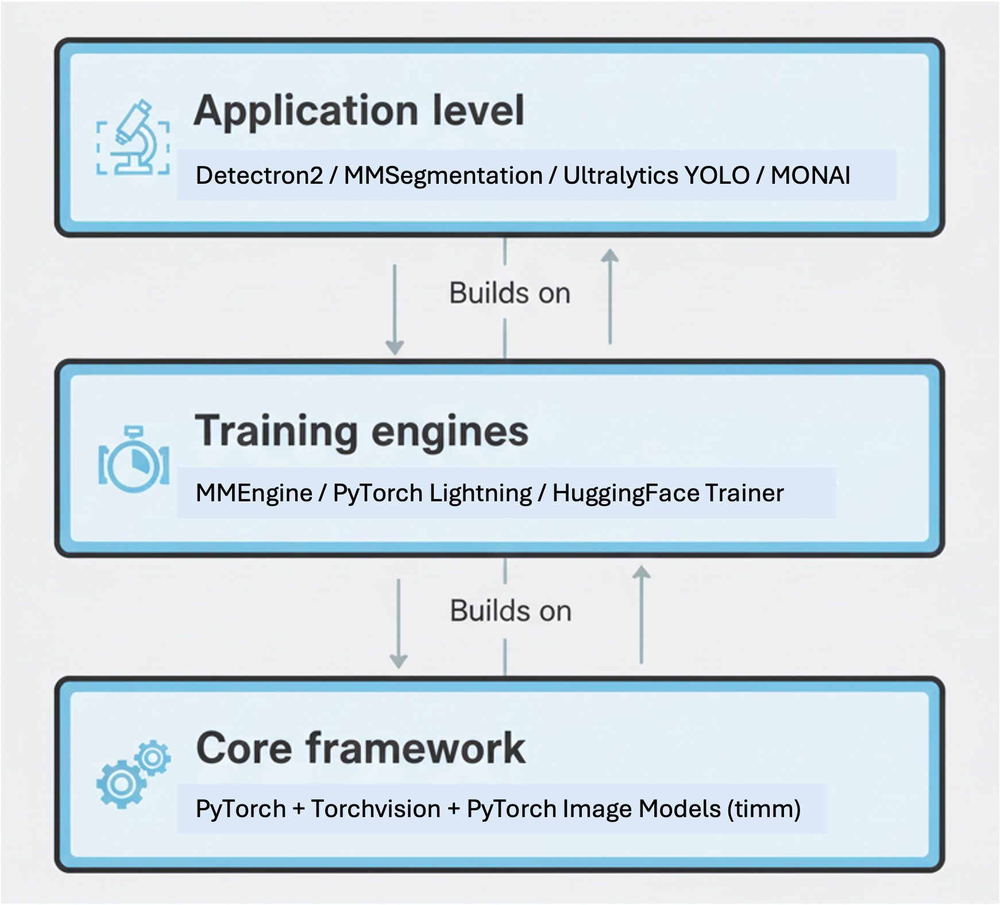
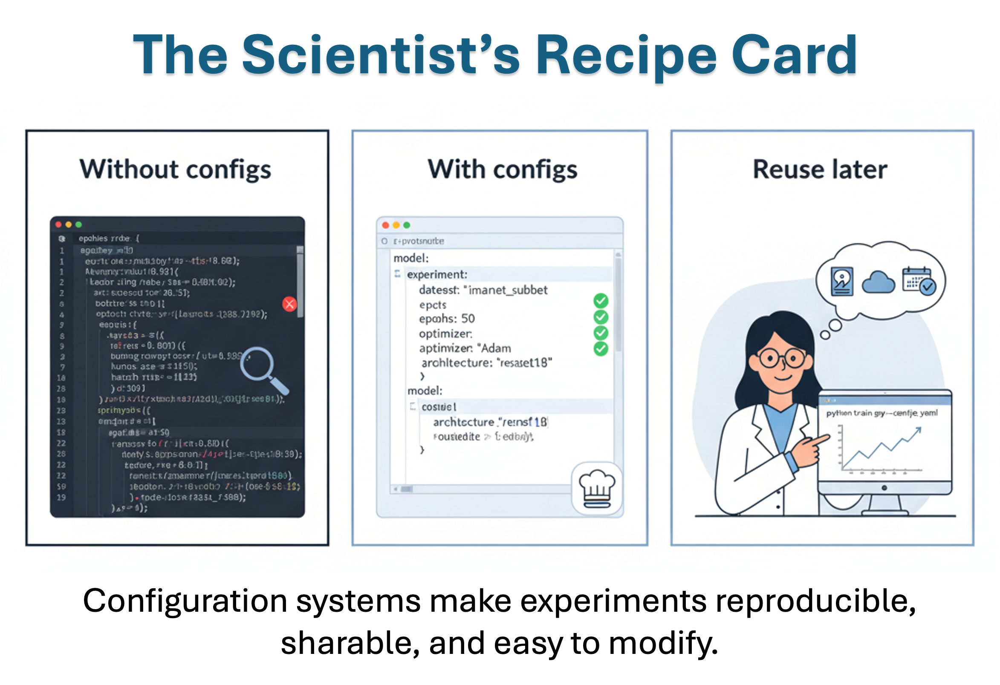
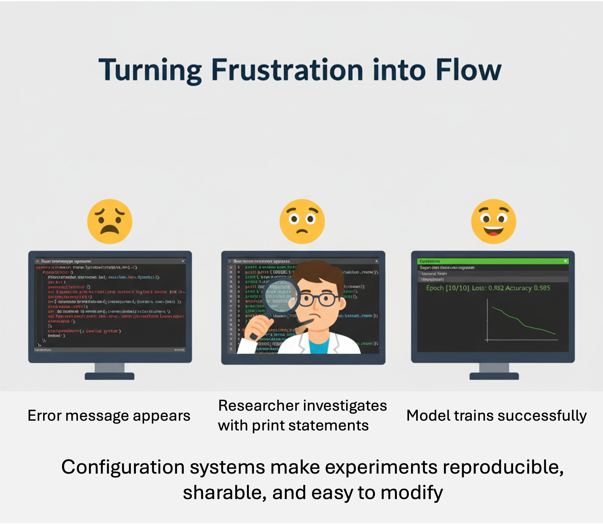

13 Introduction to Deep Learning Libraries for Image Analysis
Overview
In the previous chapters, we built our own neural networks step by step, from the basic building blocks to full-fledged models using PyTorch. You’ve seen how much power PyTorch gives us: we can design layers, build custom architectures, and train deep networks for image analysis almost from scratch.
But in real-world research, especially when projects need to move fast or integrate complex models (like object detection, instance segmentation, or multi-class land cover mapping), building everything from scratch quickly becomes overwhelming. This is where deep learning libraries step in.

Think of PyTorch as a box of electronic components, resistors, capacitors, wires, chips. You can build anything if you’re patient and skilled. Deep learning libraries, on the other hand, are like modular circuit boards, ready-made systems you can plug together, modify, and extend. They free you from re-implementing the same boilerplate code so you can focus on research questions, data, and innovation.
In this chapter, we’ll explore these “power tools” of deep learning, libraries that sit on top of PyTorch and make tasks like object detection, semantic segmentation, or instance segmentation much easier. We’ll look closely at Detectron2 (developed by Meta AI Research) and MMSegmentation (developed by OpenMMLab), both widely used in scientific and industrial image analysis.
By the end of this chapter, you’ll understand:
- Why these libraries exist and how they simplify your workflow
- How configurations, datasets, and training systems work behind the scenes
- How to quickly train and evaluate your own custom models using Detectron2 and MMSegmentation
This session is less about “coding from zero” and more about standing on the shoulders of giants – leveraging the collective work of open-source communities to make your own research more efficient, reproducible, and powerful.
13.1 From Wrenches to Power Tools: Why Libraries?
When we first learned deep learning, we did everything the “manual” way: defining layers, activation functions, loss functions, and optimizers from scratch. That process was essential: it helped us understand what really happens inside a neural network.
But now imagine you’re starting a new research project, say, mapping melt ponds in Arctic imagery or detecting wildfires from satellite data. You know convolutional networks can help, but do you really want to write every part of the training pipeline again: the dataset loader, data augmentations, evaluation metrics, checkpoints, logging…?
That’s like fixing a car with just a wrench set, technically possible, but slow and exhausting. Deep learning libraries such as Detectron2 and MMSegmentation are like power tools: they handle the repetitive engineering so you can focus on design and experimentation.
Here’s what they bring to the table:
- Reusable blueprints: Predefined architectures like Mask R-CNN, U-Net, or SegFormer are ready to use. You can still customize them, but you don’t need to rebuild them from scratch.
- Experiment organization: Config files (often YAML or Python-based) store hyperparameters, datasets, and model details in one place, making it easy to reproduce experiments.
- Scalable training: Multi-GPU training, mixed precision, and checkpointing are built-in.
- Community wisdom: These libraries encode years of experience from researchers who’ve already solved the same headaches you’re likely to face.
Using such frameworks doesn’t mean losing flexibility. In fact, most allow deep customization: you can plug in your own backbone, add a new loss function, or modify the evaluation logic. Think of them as scaffolding, a structure that supports your ideas while keeping everything stable and organized.
In short:
PyTorch teaches you how to build; Detectron2 and MMSegmentation teach you how to scale.
Deep learning libraries can save you time, but they won’t think for you. They won’t fix poor data quality, unbalanced labels, or the wrong model choice. The best researchers use these tools because they understand what’s inside them. That’s why the earlier PyTorch foundations are so important: they give you the mechanical intuition to use high-level tools wisely.
13.2 Where Do Libraries Fit in the Deep Learning Workflow?
By now, you’ve seen that deep learning libraries are not replacements for PyTorch, they are extensions of it. Think of them as layers of abstraction built on top of your foundation, automating the tedious parts while leaving room for creativity.
Let’s recall the typical workflow you’ve been practicing:
- Define your data: collecting, labeling, and preprocessing images
- Build your model: choosing an architecture and writing its layers
- Train and evaluate: running experiments, tuning hyperparameters, analyzing results
- Deploy or reuse: applying the trained model to new images or datasets

Deep learning libraries step in mainly during steps 2 and 3, though some also help with data handling. They provide:
- Ready-made model definitions (so you don’t need to code every convolution and skip connection),
- Pre-configured training pipelines (so you don’t manually manage learning rates or checkpoints),
- Built-in evaluators and loggers (so you get standardized metrics out of the box).
You can still open the hood, but the engine runs much more smoothly.
If PyTorch is like driving a manual car, full control over every gear and pedal, libraries like Detectron2 and MMSegmentation are your self-driving research assistants.
You set the destination (the research goal), adjust the route when needed, and let the framework handle the technical road rules of training, batching, and evaluation.
13.3 The Landscape at a Glance
Once you start exploring deep learning tools, it can feel like walking into a bustling workshop, every bench has its own specialized equipment.
Some tools are small and flexible (good for tinkering), while others are industrial-grade systems built for large-scale experiments.
Let’s take a quick tour of this landscape and see how the pieces fit together.
At the very bottom sits PyTorch, the foundation of almost everything in this ecosystem. It provides the essential machinery: tensors, automatic differentiation, neural network layers, and optimizers.
Alongside it, torchvision and timm (short for PyTorch Image Models) offer a growing library of pre-implemented models and utilities. If PyTorch is the language, these are your ready-made sentences: common CNNs, ViTs, and ResNets you can borrow and adapt.
High-Level Libraries: The Task Experts
Building on top of PyTorch are specialized frameworks that focus on particular types of image understanding tasks. Each one comes with optimized models, data pipelines, and evaluation tools designed for a specific research goal.
| Library | Focus | Example Use Case |
|---|---|---|
| Detectron2 (Meta AI) | Object detection & instance segmentation | Detecting wildlife or human-made structures in Arctic imagery |
| MMSegmentation (OpenMMLab) | Semantic segmentation | Land cover mapping, permafrost zone classification |
| Ultralytics YOLO | Real-time detection | Drone-based monitoring or field data collection |
| MONAI | Medical image analysis | Cross-domain transfer for geospatial raster segmentation |
Each of these libraries is built on PyTorch, but adds powerful components:
- Config systems to control every detail of the model and experiment
- Data loaders that follow standard dataset formats (e.g., COCO, Cityscapes)
- Evaluation modules that calculate common metrics automatically
- Model zoos that store pretrained weights and reference baselines
Glue Layers and Trainer Engines
Underneath these libraries are training engines like mmengine, PyTorch Lightning, or Lightning Fabric, which handle distributed training, checkpointing, and logging. They ensure reproducibility and scalability across GPUs or clusters.
In research practice, you may not need to use these directly, but knowing they exist helps you understand what’s running behind the scenes when you launch a training job.

You don’t have to learn all of these at once. A good way to start is to pick one library that aligns with your research question. For example:
- Detectron2 if you’re identifying or counting objects in images (ice floes, wildlife, vehicles).
- MMSegmentation if you’re labeling every pixel (land cover, permafrost, water vs. ice).
Later, once you’re comfortable, you’ll see that most frameworks share similar ideas, configuration files, model registries, and trainer loops, just with slightly different flavors.
13.4 Model Zoos & Transfer Learning Superpowers
One of the most exciting parts of using modern deep learning libraries is that you don’t need to start from zero. Instead of training a model entirely from scratch, you can borrow the knowledge of models already trained on massive datasets, a concept known as transfer learning.
What Is Transfer Learning?
In essence, transfer learning means starting with a model that already “knows” general visual features, edges, textures, shapes, learned from millions of images (for example, ImageNet or COCO). You then fine-tune it on your own, smaller dataset (for example, Arctic satellite scenes).
What Is a Model Zoo?
A Model Zoo is a curated collection of pretrained models that you can load instantly. Each model comes with:
- Pretrained weights
- A ready-to-use configuration file
- Example scripts for training and inference
- Documented accuracy and benchmark results
Most major libraries have their own Model Zoo:
- Detectron2: Models like Faster R-CNN, Mask R-CNN, RetinaNet, and ViTDet trained on COCO and LVIS.
- MMSegmentation: Dozens of segmentation networks, U-Net, DeepLabV3+, SegFormer, HRNet, pretrained on ADE20K, Cityscapes, and more.
- Ultralytics YOLO: Multiple versions (YOLOv5, YOLOv8) optimized for size and speed.
- MONAI: 2D and 3D models pretrained on medical datasets, sometimes transferable to geoscientific data.
How Transfer Learning Works in Practice
Here’s the basic recipe you’ll see repeated across libraries:
Load a pretrained model: Start with a checkpoint trained on a large benchmark.
cfg.MODEL.WEIGHTS = "detectron2://COCO-InstanceSegmentation/mask_rcnn_R_50_FPN_3x.yaml"Adapt the model to your dataset: Adjust the number of output classes and dataset paths.
cfg.MODEL.ROI_HEADS.NUM_CLASSES = 3 # for your 3 Arctic land cover typesFine-tune on your own data: Instead of random initialization, the model begins with knowledge from the pretrained checkpoint, faster convergence, better accuracy, and less data required.
Save and reuse: Once trained, you can store your model as your own “mini zoo” for future experiments.
Why This Matters for Researchers
Transfer learning is especially powerful for scientific and environmental data, where labeled examples are scarce. A model trained on everyday photos (like COCO) might not have seen icebergs or tundra vegetation, but its early layers already know how to detect edges, shapes, and patterns. Those skills transfer remarkably well to geospatial imagery with only minimal retraining.
In practice: Fine-tuning a COCO-pretrained Mask R-CNN can outperform a model trained from scratch on your small Arctic dataset, often in a fraction of the time.
Don’t think of pretrained models as shortcuts; think of them as foundations. They let you start at the second floor of knowledge instead of the basement. Just remember: a good researcher still tests, validates, and adapts, never copies blindly.
13.5 Configuration Styles Without Tears
By now, you know that every deep learning project involves a lot of details, learning rates, datasets, model names, checkpoint paths, augmentation settings, and more. If you hard-code all of that into Python scripts, your experiment directory will soon look like a spaghetti bowl of slightly different files.
That’s where configuration systems come in.
What’s a Configuration System?
A configuration file is simply a structured way to describe how your experiment should run. Instead of changing numbers inside code, you define them in a single, human-readable file and let the training engine read it.
It’s like giving your experiment a recipe card:
“Use a ResNet-50” backbone, train for 10,000 iterations, on this dataset, with that learning rate.”
This not only keeps things tidy, it also makes your research reproducible. A month from now (or a reviewer six months later), you’ll be able to re-run your model exactly as before.

Configuration in Detectron2
Detectron2 offers two flavors of configuration systems, both widely used in research:
| Type | Format | Strength |
|---|---|---|
| Default Config | YAML-based | Simple and traditional |
| LazyConfig | Python-based | Flexible and programmatic |
1. Default Config (YAML)
This older system uses YAML files that look like this:
MODEL:
WEIGHTS: "detectron2://COCO-Detection/faster_rcnn_R_50_FPN_3x.yaml"
ROI_HEADS:
NUM_CLASSES: 3
SOLVER:
BASE_LR: 0.002
MAX_ITER: 10000
DATASETS:
TRAIN: ("my_dataset_train",)
TEST: ("my_dataset_val",)You can modify these settings in Python:
from detectron2.config import get_cfg
cfg = get_cfg()
cfg.merge_from_file("path/to/config.yaml")
cfg.MODEL.ROI_HEADS.NUM_CLASSES = 3Then train:
python train_net.py --config-file path/to/config.yaml2. LazyConfig (Python)
Newer versions of Detectron2 introduce LazyConfig, which uses Python itself as the configuration language. You can define dynamic logic (loops, function calls) directly inside your config.
from detectron2.config import LazyCall
from detectron2.modeling import build_model
config = dict(
model=LazyCall(build_model)(
backbone=dict(type="ResNet", depth=50),
num_classes=3,
),
solver=dict(base_lr=0.002, max_iter=10000),
)Then load and run:
from detectron2.config import LazyConfig
cfg = LazyConfig.load("my_config.py")Why it’s useful: LazyConfig makes it easy to reuse pieces of configs, automate parameter sweeps, and integrate logic while keeping experiments reproducible.
Configuration in MMSegmentation
MMSegmentation follows a similar philosophy but uses a hierarchical Python-based config system (shared across all OpenMMLab libraries). Each config file inherits from a base file — so you can easily stack settings:
_base_ = [
'../_base_/models/segformer_mit-b0.py',
'../_base_/datasets/ade20k.py',
'../_base_/default_runtime.py',
'../_base_/schedules/schedule_20k.py'
]Then you can override parameters for your custom experiment:
model = dict(
decode_head=dict(num_classes=5),
pretrained='pretrained/segformer_mit-b0.pth'
)Why it’s useful: This modular structure helps you swap datasets, models, or training schedules without rewriting code, ideal for researchers comparing multiple configurations.
Treat your configuration files like lab notebooks:
- Always save a copy of the exact config used for each experiment.
- Name it clearly (e.g.,
segformer_lr2e-3_bs16_20k.py). - Store it with your results. It’s your evidence of what was tested.
When a collaborator asks, “Which hyperparameters did you use?”, your answer should be one command away.
13.6 Data, Datasets, and Formats You’ll Actually Meet
Every deep learning model lives or dies by its data. In earlier chapters, we loaded images manually and passed them through DataLoaders. That gave us flexibility, but it also meant writing lots of boilerplate code, for example, file paths, annotations, transforms, batching.
High-level libraries like Detectron2 and MMSegmentation take care of much of that work. They expect data to follow common formats and provide tools to register and transform datasets automatically.
Why Registration Matters
Before a library can use your dataset, it needs to know three things:
- Where your images are stored
- How annotations are structured (bounding boxes, polygons, masks, etc.)
- What each label means
Registration tells the framework:
“Here’s my dataset’s name, here’s how to load it, and here’s what each class represents.”
After registration, the library can treat your dataset just like COCO or Cityscapes, even if it’s custom Arctic imagery or wildfire maps.
Detectron2: Dataset Catalogs and Metadata
Detectron2 uses two registries:
DatasetCatalog: keeps track of how to load your data.MetadataCatalog: stores extra info like class names and color palettes.
Here’s a simple example:
from detectron2.data import DatasetCatalog, MetadataCatalog
def get_arctic_dataset():
# Returns a list of dictionaries, one per image
return dataset_dicts
DatasetCatalog.register("arctic_train", get_arctic_dataset)
MetadataCatalog.get("arctic_train").set(thing_classes=["ice", "water", "rock"])After this, you can simply say cfg.DATASETS.TRAIN = ("arctic_train",), Detectron2 knows where to look and how to interpret it.
Built-in bonus: If your data already follows the COCO format (images + JSON annotations), you can skip the function and register directly:
from detectron2.data.datasets import register_coco_instances
register_coco_instances("arctic_coco", {}, "annotations.json", "images/")MMSegmentation: Dataset Wrappers and Pipelines
MMSegmentation uses a dataset registry too, but it focuses on semantic segmentation (labeling each pixel). Datasets are defined in configuration files as pipelines, sequences of steps that load, resize, normalize, and augment images.
Example (from config.py):
dataset_type = 'CustomDataset'
data_root = 'data/arctic/'
train_pipeline = [
dict(type='LoadImageFromFile'),
dict(type='LoadAnnotations'),
dict(type='Resize', scale=(512, 512)),
dict(type='RandomFlip', prob=0.5),
dict(type='PackSegInputs')
]
data = dict(
train=dict(
type=dataset_type,
data_root=data_root,
img_dir='images/train',
ann_dir='masks/train',
pipeline=train_pipeline
)
)This configuration tells MMSegmentation exactly how to read and how to transform the data without writing a single loader in Python.
Common Dataset Formats
| Format | Used In | Structure | Typical Task |
|---|---|---|---|
| COCO | Detectron2, YOLO | Images + JSON annotations | Object detection, instance segmentation |
| Cityscapes | MMSegmentation | Folder per split + label masks | Semantic segmentation |
| Pascal VOC | MMSegmentation | XML annotations + masks | Detection & segmentation |
| Custom (GeoTIFF, PNG) | Research data | Often adapted to COCO or Cityscapes format | Any |
Most libraries assume your dataset follows one of these. If not, you can write a small converter, once, and use it across all your experiments.
Before you annotate a single image, decide which format your library expects. Converting later is possible but painful.
Starting in COCO or Cityscapes format saves enormous time and makes your data immediately usable in most frameworks.
13.7 Training, Evaluating, and Logging (The Happy Path)
If building a neural network from scratch is like cooking in a lab kitchen, measuring every gram and washing every beaker, then using a deep learning library is like stepping into a professional kitchen: everything’s prepped, labeled, and ready for you to create.
Libraries like Detectron2 and MMSegmentation come with trainers and evaluators that handle most of the behind-the-scenes work. All you need to do is point them to the right dataset, choose a model, and press “run.”
Training Without the Tears
In raw PyTorch, you need to manage the training loop yourself:
for epoch in range(num_epochs):
for batch in dataloader:
optimizer.zero_grad()
loss = model(batch)
loss.backward()
optimizer.step()In Detectron2 or MMSegmentation, this loop is built in.
Detectron2: The DefaultTrainer
Detectron2 provides a DefaultTrainer, an all-in-one tool that sets up the model, optimizer, data loader, evaluator, and logging for you.
Step 1: Prepare the config
from detectron2.config import get_cfg
cfg = get_cfg()
cfg.merge_from_file("configs/COCO-InstanceSegmentation/mask_rcnn_R_50_FPN_3x.yaml")
cfg.DATASETS.TRAIN = ("arctic_train",)
cfg.DATASETS.TEST = ("arctic_val",)
cfg.SOLVER.MAX_ITER = 5000
cfg.MODEL.ROI_HEADS.NUM_CLASSES = 3
cfg.OUTPUT_DIR = "./output"Step 2: Start training
from detectron2.engine import DefaultTrainer
trainer = DefaultTrainer(cfg)
trainer.resume_or_load(resume=False)
trainer.train()And that’s it! Detectron2 handles everything from checkpointing to TensorBoard logging.
When training finishes, you’ll find your model weights, metrics, and logs neatly stored in ./output.
MMSegmentation: The Runner System
MMSegmentation uses a runner system (from mmengine) that works similarly.
Just define your config, then run:
python tools/train.py configs/segformer/segformer_mit-b0_512x512_20k_arctic.pyThe runner:
- Builds your dataset
- Initializes the model
- Handles mixed precision and multi-GPU training
- Logs everything to a timestamped folder
It even tracks best checkpoints automatically, saving the model with the highest validation mIoU.
Evaluation: Knowing How You’re Doing
Both libraries have built-in evaluators that know how to measure standard metrics.
| Library | Common Metrics | Typical Tasks |
|---|---|---|
| Detectron2 | mAP, AP50, AP75 | Object detection, instance segmentation |
| MMSegmentation | mIoU, F1-score, pixel accuracy | Semantic segmentation |
To evaluate a model in Detectron2:
from detectron2.evaluation import COCOEvaluator, inference_on_dataset
from detectron2.data import build_detection_test_loader
evaluator = COCOEvaluator("arctic_val", cfg, False)
val_loader = build_detection_test_loader(cfg, "arctic_val")
inference_on_dataset(trainer.model, val_loader, evaluator)In MMSegmentation, evaluation happens automatically after each epoch, metrics appear in your terminal and in the log files.
Logging: See Your Model Learn
Detectron2 and MMSegmentation both record training progress using event loggers. You can visualize them in TensorBoard or WandB.
tensorboard --logdir ./outputYou’ll see curves for loss, learning rate, and validation accuracy — a powerful way to detect overfitting or convergence.
These trainers handle most details for you, but don’t stop watching. Keep an eye on:
- Loss not decreasing (maybe learning rate too high)
- Validation metrics not improving (maybe overfitting)
- GPU memory usage (batch size too large)
Even in an automated system, the best results come from curious supervision.
13.8 Extending When You Outgrow the Defaults
At some point, every researcher reaches a moment of curiosity:
“What if I change this part of the model?”
That’s when you know you’re ready to go beyond using the defaults, to start extending the framework. The good news is, libraries like Detectron2 and MMSegmentation are designed for that. They’re modular, meaning every major component (model, dataset, loss, trainer) can be swapped or redefined without rewriting everything else.
How Modularity Works
Think of these frameworks as Lego sets:
- The backbone extracts features (e.g., ResNet, Swin Transformer).
- The head interprets those features for detection or segmentation.
- The loss function guides learning.
- The trainer controls how the model updates.
Each part connects through a clear interface. You can remove one block and insert your own as long as it fits the same shape.
Custom Components in Detectron2
Detectron2 uses registries, basically dictionaries that store all available modules.
To create your own backbone:
from detectron2.modeling import BACKBONE_REGISTRY, Backbone, ShapeSpec
import torch.nn as nn
@BACKBONE_REGISTRY.register()
class ArcticBackbone(Backbone):
def __init__(self, cfg, input_shape):
super().__init__()
self.conv = nn.Conv2d(3, 64, kernel_size=7, stride=2, padding=3)
def forward(self, x):
return {"stage1": self.conv(x)}
def output_shape(self):
return {"stage1": ShapeSpec(channels=64, stride=2)}Then, in your config:
cfg.MODEL.BACKBONE.NAME = "ArcticBackbone"That’s it! Detectron2 will use your custom module in the next training run.
Tip: You can register anything — custom ROI heads, new data mappers, or loss functions. It’s how most research papers built on Detectron2 extend its functionality.
Custom Components in MMSegmentation
MMSegmentation achieves the same flexibility through Python modules + registry decorators, powered by mmengine.
To define your own segmentation head:
from mmseg.registry import MODELS
from mmseg.models.decode_heads import BaseDecodeHead
import torch.nn as nn
@MODELS.register_module()
class ArcticHead(BaseDecodeHead):
def __init__(self, in_channels, channels, num_classes, **kwargs):
super().__init__(in_channels, channels, num_classes, **kwargs)
self.conv = nn.Conv2d(in_channels, num_classes, kernel_size=1)
def forward(self, inputs):
x = self._transform_inputs(inputs)
return self.conv(x)Then you can reference it directly in your config:
model = dict(decode_head=dict(type='ArcticHead', num_classes=4))Behind the scenes, MMSegmentation automatically recognizes and builds it. There is no need to touch the core codebase.
Custom Training Loops
If you ever need total control (for example, new scheduling logic or domain adaptation), both frameworks let you write your own training loop.
Detectron2 example:
from detectron2.engine import SimpleTrainer
trainer = SimpleTrainer(model, data_loader, optimizer)
trainer.train()MMSeg example: You can subclass IterBasedRunner or EpochBasedRunner from mmengine to modify training behavior.
Customization doesn’t mean reinventing everything at once. Try the “one-change rule”: make one small modification (e.g., a new backbone or loss) while keeping the rest default.
This keeps your experiments stable and interpretable, crucial for scientific work.
13.9 Reproducibility & Project Structure That Won’t Haunt You Later
Once you’ve trained your first few models, it’s tempting to celebrate and move on. But a few weeks later, someone (maybe even future you) will ask:
“Which config file produced this model again?”
If you can’t answer that question confidently, it’s time to talk about reproducibility, the unsung hero of good research.
Why Reproducibility Matters
Deep learning experiments are notoriously easy to lose track of. A change of one parameter, random seed, or data split can subtly alter your results. To make your work credible, shareable, and expandable, you want others, and your future self, to be able to recreate your exact run.
Organize Your Project Like a Scientist
A clean folder structure makes all the difference. Here’s a simple yet scalable template used in many research labs:
project_name/
├── configs/ # All config files (YAML or Python)
├── data/ # Datasets or symbolic links
├── notebooks/ # Exploration, visualization
├── scripts/ # Custom scripts (e.g., data converters)
├── output/ # Model checkpoints, logs, results
│ ├── run_2025_10_20_ice_mask/
│ └── run_2025_10_21_swin_large/
├── README.md # Notes and experiment summaries
└── environment.yml # Conda environment or pip requirementsRule of thumb: everything you need to reproduce an experiment should live under one directory or be referenced clearly in version control (e.g., GitHub).
Save the Essentials Every Time
- Configuration file: the recipe of your experiment.
- Random seed: ensures identical initialization.
- Model checkpoint: weights after training.
- Logs: losses, accuracies, and metrics.
- Environment info: PyTorch version, CUDA version, GPU type.
Most frameworks can log these automatically, just don’t delete them when cleaning up!
Example: Making Experiments Self-Contained
In Detectron2, you can do:
from detectron2.utils.env import collect_env_info
with open("output/env.txt", "w") as f:
f.write(collect_env_info())In MMSegmentation, this happens by default in work_dirs/. You can even set:
log_level = 'INFO'
default_hooks = dict(logger=dict(interval=50))to ensure everything important is recorded.
Version Control Isn’t Just for Code
Treat your configs like research notebooks, commit them to Git:
git add configs/segformer_arctic.py
git commit -m "Experiment: SegFormer lr=2e-3 batch=16 20k iters"Now, every experiment has a timestamp and description. If a result looks surprising, you can trace exactly which settings produced it.
Tip: You can even tag commits with the model name and metric (e.g.,
v1.3_mIoU78.4).
Track Results Like a Scientist
Many researchers use lightweight experiment trackers like:
- TensorBoard (visual learning curves)
- Weights & Biases (W&B) (interactive dashboards)
- MLflow or Comet (experiment management)
They integrate easily with Detectron2 and MMSegmentation. You just add a few lines of code or CLI flags.
The goal isn’t flashy charts; it’s traceability.
Aim for this ideal:
Any trained model in your project can be reproduced by running one command.
Example:
python train.py --config configs/segformer_arctic.py --seed 42If that single command can rebuild your result, your workflow is healthy.
13.10 Common Pitfalls (and Friendly Fixes)
No matter how polished the library or how carefully you follow tutorials, sooner or later, something will go wrong. That’s not failure, that’s deep learning reality.
Every researcher, from beginner to expert, runs into broken imports, dimension mismatches, and mysterious “CUDA out of memory” errors.
The key is not avoiding problems, it’s learning how to debug calmly and systematically.
13.10.1 “CUDA out of memory” — The Classic
Symptom: Training crashes with messages like:
RuntimeError: CUDA out of memory.Fix:
- Lower your
batch_size. - Reduce image size or crop patches.
- Disable unnecessary augmentations.
- If using multiple GPUs, set
cfg.SOLVER.IMS_PER_BATCHorsamples_per_gpuaccordingly. - Clear the cache:
torch.cuda.empty_cache()
Tip: When experimenting, always start small. Fast iteration beats huge runs.
13.10.2 Shape Mismatch Errors
Symptom:
RuntimeError: The size of tensor a (256) must match the size of tensor b (128)Fix:
- Check that your input channels match the model’s expected channels (e.g., 3 vs 14-band imagery).
- In MMSeg, update
in_channelsin the config. - In Detectron2, confirm your custom backbone’s output shape matches the head input.
Tip: Print shapes often, it’s the simplest sanity check in deep learning.
13.10.3 Wrong Class Counts
Symptom: Model trains, but outputs random colors or wrong labels.
Fix:
- Make sure
NUM_CLASSES(Detectron2) ornum_classes(MMSeg) equals the number of classes excluding background, if required. - Verify label encoding: 0 might be background or the first class.
Tip: Plot one sample mask with its predicted output early, visual sanity beats numeric confusion.
13.10.4 Dataset Not Found or Misregistered
Symptom:
KeyError: 'Dataset not registered: my_dataset_train'Fix:
- Ensure dataset registration runs before training starts.
- Double-check that paths are absolute or correctly relative.
- In Detectron2, print the list of registered datasets to verify registration.
from detectron2.data import DatasetCatalog
print(DatasetCatalog.list())Tip: Registration is your library’s handshake, if it doesn’t know your dataset, it can’t talk to it.
13.10.5 Non-Reproducible Results
Symptom: Running the same code twice gives slightly different results.
Fix:
Set seeds everywhere:
import torch, random, numpy as np torch.manual_seed(42); random.seed(42); np.random.seed(42)In configs:
cfg.SEED = 42orrandom_seed = 42.Keep software versions fixed in
environment.yml.
Tip: Randomness is great for nature, not for reproducibility.
13.10.6 Overfitting — The Silent Enemy
Symptom: Training accuracy skyrockets, validation accuracy flatlines.
Fix:
- Add augmentations.
- Collect more data or use transfer learning.
- Apply early stopping or smaller models.
- Monitor validation loss, not just training loss.
Tip: Overfitting isn’t failure, it’s your model saying, “I memorized too well.”
13.10.7 Getting Lost in Configs
Symptom: Too many files, too many versions, can’t remember what changed.
Fix:
- Use clear names (
segformer_lr2e-3_bs16.py). - Add comments for each modification.
- Keep a short experiment log (even a CSV or Markdown table).
Tip: Future you will thank present you for organized notes.
Final Thought: Debugging is Part of Discovery
Every red error message is an opportunity to understand your tools more deeply. The more you debug, the more intuitive deep learning becomes. Even top researchers spend as much time fixing and refining as they do innovating, it’s all part of the craft.

Deep learning libraries make complex research possible but not effortless. With patience, good habits, and clear structure, every challenge becomes a learning moment.
Soon you’ll not only be using these frameworks, you’ll be extending them to build your own.
Where to Go Next
Congratulations! You’ve just completed one of the biggest transitions in your deep learning journey: from building everything by hand to mastering the modern research toolkit.
You now know how to:
- Understand what deep learning libraries are and why they exist,
- Choose the right framework for your task,
- Configure, train, and evaluate models using prebuilt systems,
- Customize them safely when you want to innovate, and
- Keep your research organized, reproducible, and trustworthy.
That’s a huge step. With these tools, you can now shift your focus from “how do I make this run?” to “what scientific questions can I explore with it?”
Parting Thought
Frameworks like Detectron2 and MMSegmentation are more than just code. They’re a shared language that connects thousands of researchers worldwide. By learning to use them thoughtfully, you’ve joined that conversation.
Keep your curiosity alive, your experiments tidy, and your GPU cool. The best discoveries often begin with a well-documented config.py.